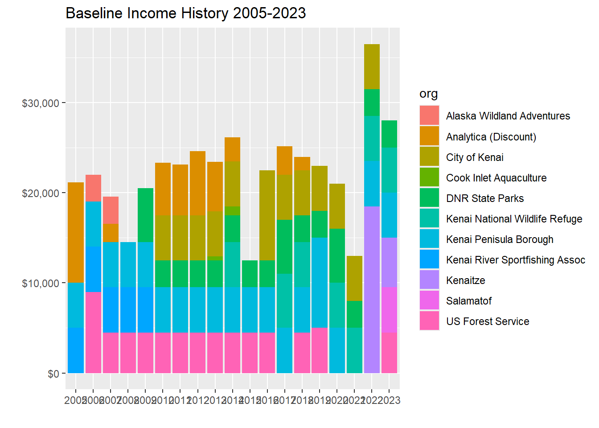
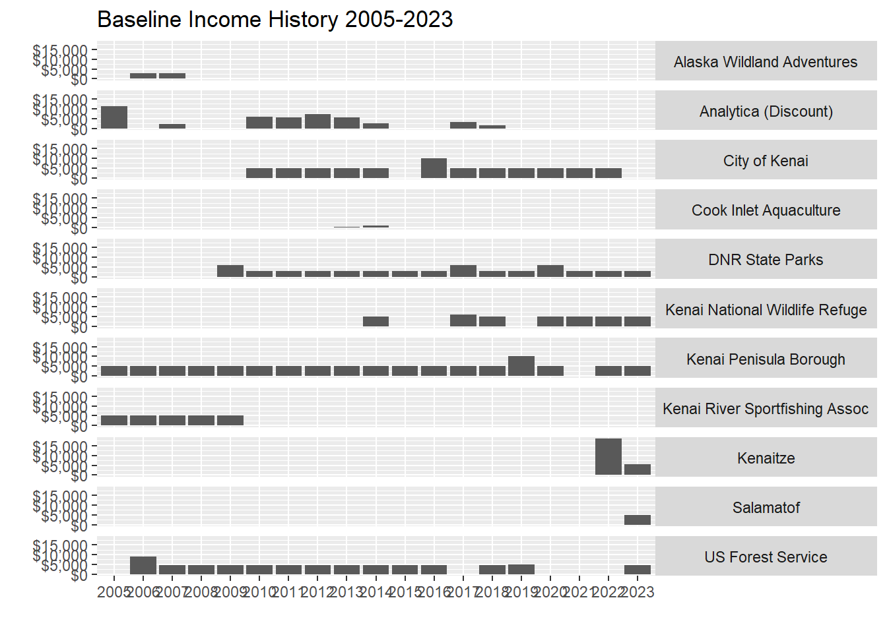
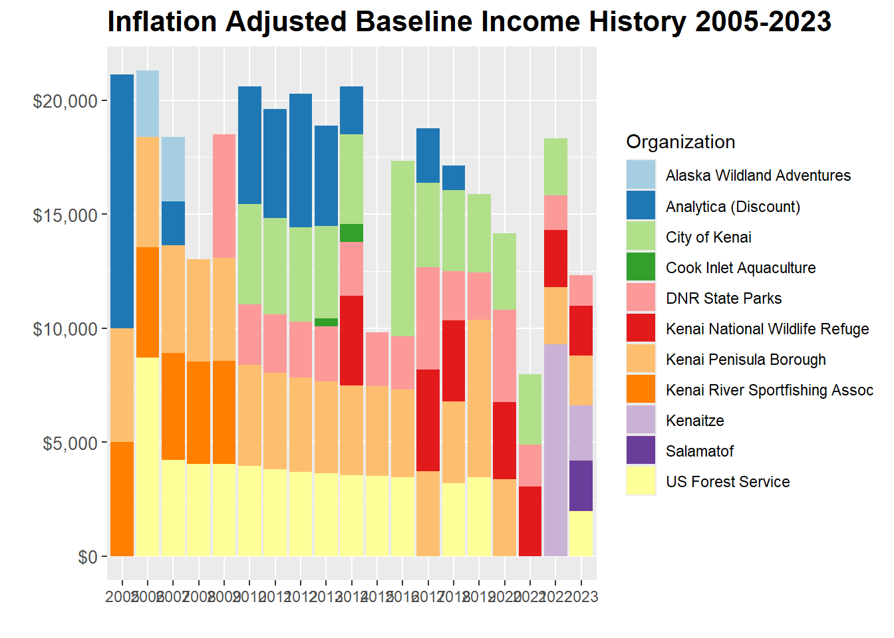

New names:
• `` -> `...1`Baseline Financial History
Introduction
The Kenai River Baseline Water Quality Monitoring project is supported by both financial and in-kind support from a broad suite of partners. Costs consist primarily of contractual laboratory expenses, along with Kenai Watershed Forum staff personnel time, equipment, and other smaller expense categories.
Partners are invoiced on an annual basis. While contribution levels have remained relatively stable since 2005, 56% inflation of the U.S. dollar since the year 2005 has substantially reduced the real value of resources available to the project. As of 2024, in order to continue the same level of service as seen throughout the project’s history, project managers must either seek additional sources of funding or de-prioritize certain sampling sites or parameters.
Expense history
Income history
Plot and summarise KWF Baseline Water Quality Financial Income History
New names:
• `` -> `...1`Warning: Removed 122 rows containing missing values or values outside the scale range
(`geom_bar()`).
Warning: Removed 122 rows containing missing values or values outside the scale range
(`geom_bar()`).
Removed 122 rows containing missing values or values outside the scale range
(`geom_bar()`).
Warning: Removed 122 rows containing missing values or values outside the scale range
(`geom_bar()`).Plot and summarise Inflation-Adjusted KWF Baseline Water Quality Financial Income History
Joining with `by = join_by(year)`Warning: Removed 122 rows containing missing values or values outside the scale range
(`geom_bar()`).
Warning: Removed 122 rows containing missing values or values outside the scale range
(`geom_bar()`).